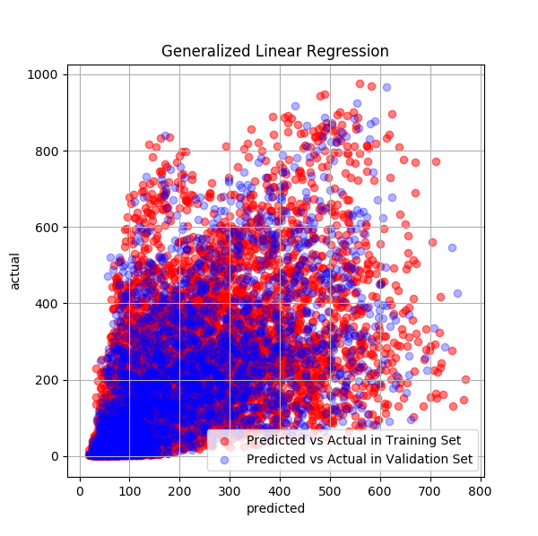
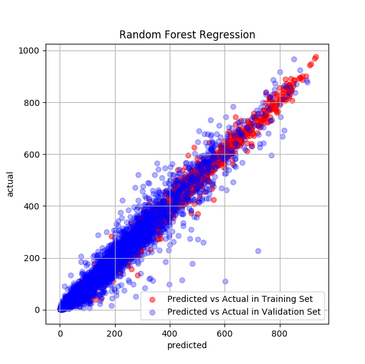
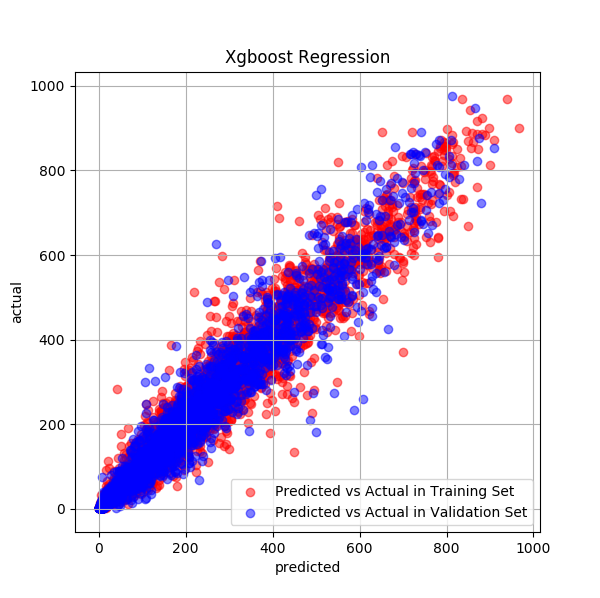

The Problem
The problem is a machine learning competition hosted by Kaggle.
In this project, we aim to predict the count of bike rentals for a city-wide bikeshare system in Washington DC, using the data collected by the Capital Bike Share Program. Bike rental service has been encouraged an alternative way to provide convenient access to vehicles for a short period of time and in an environment-friendly way. A common issue bothering bike rental shops or bike sharing systems is how to predict rental demand, which is essential to the operation of such kind of business.
An accurate prediction on the demand could be used to solve the following problems:
In addition, the prediction results would serve as a reference of price adjustment by taking the significant factors into considerations, such as weather, holidays, weekend etc.
Dataset
The dataset combined bike sharing data collected by the Capital Bike Share program and the weather data in Washington D.C. It has the hourly rental data spanning two years from 1/1/2011 to 12/31/2012. The training set is comprised of the first 19 days of each month, while the test set is the 20th to the end of the month. To predict the total count of bikes rented during each hour covered by the test set, only information available prior to the rental period can be used.
In the exploratory analysis, we asked following questions:
An interesting pattern was displayed that for the weekday 0 to 4, which represent Monday to Friday, the peaks of bike rental occurred at 8 and 17 o’clock, while for the weekday 5 and 6, which represent the weekend, the peaks of bike rental occurred at the noon.
The pattern of hourly bike rental is consistent throughout the seasons, but obviously in spring, the total count is lowered than the other seasons
Although the average count of bike rental is pretty closed among holiday, weekends and weekdays, but there are more outliers in weekdays.
Registered users maintained a higher count of rental bike, especially in the peak hours (8 and 17 o'clock). However, casual users displayed a different pattern in that not only did they rent much less in total, but also they usually rented bikes between 12 to16.
After doing the exploratory analysis, we took following steps to tackle down the problem:
- Feature Engineering. We created new features based on the datetime column and dropped highly correlated features.
- Data Split. The data was splitted into training set (70%) and validation set (30%).
- Model Selections. We opted for four predictive models. For each model we used the training set to tune the parameters to achieve the lowest rmlse (Root Mean Squared Logarithmic Error). The performance of the four models was then compared with the validation set.
- Prediction. With the model that yielded the greatest performance with the validation set, we predicted the hourly bike rental count in the test data.
Generalized Linear Regression
Considering the values of response variables are positive, we tried two generalized linear models: Poission Regression and Negative Binomial Regression. The latter yielded a lower rmlse, and gave the rmlse score of 1.16 on the validation dataset.
Random Forest
The model selection on Random Forest was based on five parameters including the number of trees. The optimized Random Forest gave us a rmlse around 0.35.
Gradient Boost
As a strong competitor of Random Forest, Gradient Boost is another method of choice. In this problem, gradient boosted trees gave us the rmlse score of 0.4125, a result closed to the Random Forest

XGBoost
Finally, we tried a recently dominating model, the XGBoost. With this model, we achieved the lowest rmlse score of 0.30.
